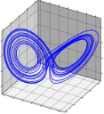

Skip to main content
Contents
Index
Search Book
close
Search Results:
No results.
Dark Mode
Prev
Up
Next
\(\require{cancel}\newcommand{\nicefrac}[2]{{{}^{#1}}\!/\!{{}_{#2}}} \newcommand{\unitfrac}[3][\!\!]{#1 \,\, {{}^{#2}}\!/\!{{}_{#3}}} \newcommand{\unit}[2][\!\!]{#1 \,\, #2} \newcommand{\noalign}[1]{} \newcommand{\qed}{\qquad \Box} \newcommand{\mybxbg}[1]{\boxed{#1}} \newcommand{\mybxsm}[1]{\boxed{#1}} \newcommand{\allowbreak}{} \newcommand{\lt}{<} \newcommand{\gt}{>} \newcommand{\amp}{&} \definecolor{fillinmathshade}{gray}{0.9} \newcommand{\fillinmath}[1]{\mathchoice{\colorbox{fillinmathshade}{$\displaystyle \phantom{\,#1\,}$}}{\colorbox{fillinmathshade}{$\textstyle \phantom{\,#1\,}$}}{\colorbox{fillinmathshade}{$\scriptstyle \phantom{\,#1\,}$}}{\colorbox{fillinmathshade}{$\scriptscriptstyle\phantom{\,#1\,}$}}} \)

Differential Equations with Linear Algebra
Dale Buske
Reloading this page will reset a start location
For a higher quality printout use the PDF version:
https://www.jirka.org/diffyqs/diffyqs.pdf